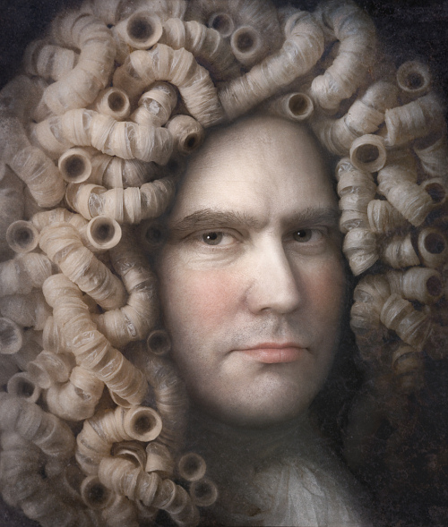
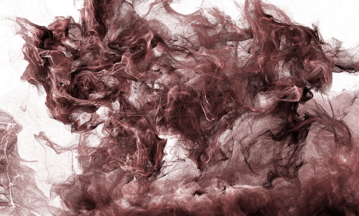

IMAGES OF THE DAY 66
04/11/2023 - 04/20/2023
Drawn and Painted Art
House on Neva Embankment
by Alexey Loskutov
04/11/2023
Click image to access artist's full exhibit

Photo Art
Amazon Scenes
04_DSC0570
by Vermac Santos
04/12/2023
Click image to access artist's full exhibit

Surreal
Portraits
Once There Was a Prison
by Gun Legler
04/13/2023
Click image to access artist's full exhibit

Photographic Art 
2008_37
by Bogdan Zwir
04/14/2023
Click image to access artist's full exhibit
Algorithmic/Fractal
Digital Painting
Radiance
by Myriam Di Maio
04/15/2023
Click image to access artist's full exhibit

3D Rendered Art
Aftertime 3D
Apocalypse Dom
by Stefan Haberkorn
04/16/2023
Click image to access artist's full exhibit

Digital Art and Photography
Fabulous Russella
by Gregoire A. Meyer
04/17/2023
Click image to access artist's full exhibit

Photographic Art
Quaternity
by H. Gay Allen
04/18/2023
Click image to access artist's full exhibit

3D Rendered Art 
Art through 3D Particles
Beast
by Teun van der Zalm
04/19/2023
Click image to access artist's full exhibit
Mixed Technique
Fractals, Photography and Digital Processing
The Melody of Night
by Benedikt Amrhein
04/20/2023
Click image to access artist's full exhibit

BACK TO IMAGES OF THE DAY 65
NEXT